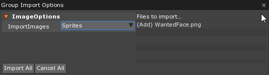
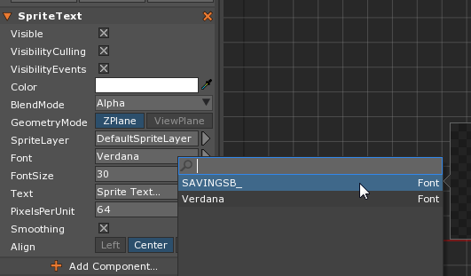
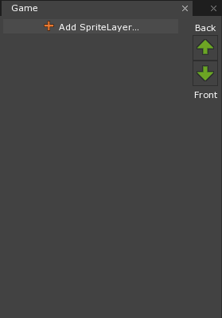
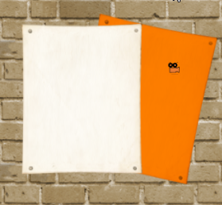
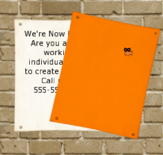
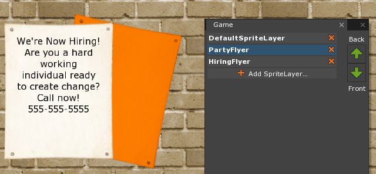
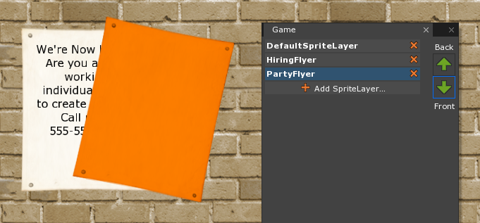
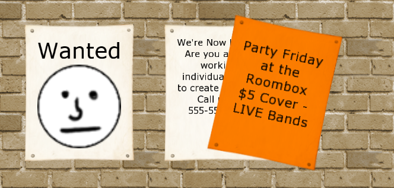

Sprite Text
This lesson covers the use of SpriteText and Sprite component and how they can be used with the Area component as well as the SpriteLayer and SpriteLayerOrder resources. Topics include tiling sprites, nine-sliced sprites, text, both wrapping and rotated, and solutions to z-fighting.
Learning Objectives
- Understand Nine-Slice Scaling
- Understand how to display text throught the
SpriteTextcomponent. - Usage of the Text Block Resource.
- Importing images.
- Layering sprites.
| Vocabulary | |
|---|---|
| Tiling | Nine-Slice Scaling |
| SpriteText | Font |
| TextBlock | Sprite Layer |
Sprites
Get all three items included in the VG_1SpritesAndText package (brickWalltileable.png, PosterOnWall.png, and Button.png) from the Void.
Tiling Sprites
By default, sprites are set up to stretch, so to make them tile we’ll have to change some settings.
- In the Library Window
Double Left Clickon SpriteSourceDouble Left Clickon brickWalltileable
- In the Sprite Source Editor Window
- Set SpriteFill to:
Tiled
- Set SpriteFill to:
{kind=link}
Left ClickSave to Sprite Source
Create a Sprite
- Command :
CreateSpriteor

- Select the newly created object
- In the Properties Window
- Set Name to:
Wall - Under Sprite
- Set SpriteSource to:
brickWalltileable
- Set SpriteSource to:
- Set Name to:
- In the Level Window
- Select the Wall
- Press
5
Scale your sprite with the Manipulator Tool.
{kind=link}
What you may have noticed is that setting it to Tiled mode had no impact on the Sprite –the image was still stretched. In order to make tiling work we’ll add the Area component.
- Press
Ctrl + Zto undo the stretched scaling of the sprite. - In the Properties Window
- In the Level Window
- Press
5
- Press
Scale your sprite with the Manipulator Tool.

Now that we have the Area component we can see the sprite is actually tiling as we manipulate it.
Nine-Slicing Sprites
Create a Sprite
- Command :
CreateSpriteor - Select the newly created object
- In the Properties Window
- Set Name to:
WantedPoster - Under Sprite
- Set SpriteSource to:
PosterOnWall
- Set SpriteSource to:
- Set Name to:
- In the Level Window
- Select the WantedPoster
- Press
5
Scale your sprite with the Manipulator Tool.
{kind=link}
Notice the stretching of the decoration along the edge. Unfortunately, this sprite doesn’t tile well.
- Press
Ctrl + Zto undo the stretched scaling of the sprite.
What you may notice is that while the edges cannot be easily stretched, the center of the sprite can be; this quality makes it valid as a Nine-Slice sprite.

Nine-Sliced sprites follow this format when being stretched.
To make it use the nine-slice scaling, we’ll once again change settings on our SpriteSource and add an Area component.
- In the Library Window
Double Left Clickon PosterOnWall
- In the Sprite Source Editor Window
- Set SpriteFill to:
NineSlice
- Set SpriteFill to:
To set the position of the lines you see in the diagram, we say how many pixels from the edge each line is.
- Set Left to:
30- Set Right to:
30- Set Top to:
30- Set Bottom to:
30Left ClickSave to Sprite Source
- Select the WantedPoster
- In the Properties Window
Scale your sprite with the Manipulator Tool.
{kind=link}
Now the edges are nice on our sprite.
Text
In our scene we are going to make our brick wall have a wanted poster on it. For consistency between our screenshots and your results, make sure your properties match:
- Select the Wall
- In the Properties Window
- Make sure your properties match the settings below:
{kind=link}
- Select the WantedPoster
- In the Properties Window
- Make sure your properties match the settings below:
{kind=link}
Now to create the text for our Wanted poster.
Create Text
- Command :
CreateSpriteTextor - Select the newly created object
- In the Properties Window
- Set Name to:
WantedText - Under Translation
- Set Translation to:
[-9.5, 1, 0]
- Set Translation to:
- Under SpriteText
- Set Color to:
[R: 0, G: 0, B: 0, A: 1.0],#000000 - Set FontSize to:
50 - Set Text to:
Wanted
- Set Color to:
- Set Name to:
- In the Properties Window
Importing Images
To make it feel more complete we’ll place a picture of our culprit in question. First we’ll need to make a picture to include, so we can just create a simple face in an external program.
Make your image 64x64 pixels, and save it as a PNG file named WantedFace.png.
or download the image used in the screenshots.
{kind=link}
Left Click, Hold + Dragyour picture from your file explorer on your computer so it is visually over the open Zero Editor.

- In the Group Import Options Window
- Set ImportImages to:
Sprites Left ClickImport All
- Set ImportImages to:
Create a Sprite
- Command :
CreateSpriteor - Select the newly created object
- In the Properties Window
- Set Name to:
WantedPicture - Under Translation
- Set Translation to:
[-8, -1.5, 0] - Set Scale to:
[3, 3, 1]
- Set Translation to:
- Under Sprite
- Set SpriteSource to:
WantedFace
- Set SpriteSource to:
- Set Name to:
- Save your project and run the game
{kind=link}
Here the text appears on our poster along with our own drawn picture.
Adding a Font
Zero Engine works with many basic fonts. All you have to do is drag and drop the font file into the editor to import it.
- Download the
VD1_Fontpackage from The Void.

TextBlock
Let’s add another poster with more information.
- Select the WantedPoster object
- Press
Ctrl + Dto duplicate the object
- Press
- In the Properties Window
- Set Name to:
HiringFlyer - Under Transform
- Set Translation to:
[-3, -1, 0]
- Set Translation to:
- Set Name to:
- Select the WantedText object
- Press
Ctrl + Dto duplicate the object
- Press
- In the Properties Window
- Set Name to:
HiringText - Under Transform
- Set Translation to:
[-4.5, 1, 0]
- Set Translation to:
- Set Name to:
Now, instead of applying the new text to the Text property like we did for the previous flyer, let’s make a new TextBlock resource that will give us more formatting options.
- Add a new TextBlock resource named:
HiringTextBlock
A new, blank window will appear. This is where we’ll write our text for the HiringFlyer.
- In the
HiringTextBlockWindow- Add the following text, complete with new lines:
We're Now Hiring!
Are you a hard working individual ready to create change?
Call now! 555-555-5555
To apply this TextBlock to our flyer, we must add the TextBlock component to our HiringText object.
- Select the HiringText object
- Add the SpriteTextBlock component
- Under TextBlock
- Set TextBlock to:
HiringTextBlock
- Set TextBlock to:
While the text has kept our line formatting, you may notice that the text has run over the edge of our poster:
{kind=link}
Of course we can grab the edges of our object and force it into the box shape, but this will skew the text until it is illegible. To confine our text to the area available on the flyer, we’ll use the Area component.
- Add the Area component
- Under Area
- Set Origin to:
TopLeft - Set Size to:
[3, 4]
- Set Origin to:
You can see that the text is now confined. The message is too large and long to be displayed, and what doesn’t get word wrapped isn’t shown.
- Under SpriteText
- Set FontSize to:
21
- Set FontSize to:
Now everything is visible, but you might notice it is a bit lopsided to the left:
- Set Align to:
Center - Save your project and run the game
{kind=link}
Here the text is correctly wrapped on our flyer.
To add a little more to the environment, we’ll layer a party flyer over our hiring flyer.
- Select the WantedPoster object
- Press
Ctrl + Dto duplicate the object
- Press
- In the Properties Window
- Set Name to:
PartyFlyer - Under Transform
- Set Translation to:
[-1, -1, 0] - Set Rotation to:
[0, 0, -12]
- Set Translation to:
- Under Sprite
- Set Color to:
[R:255, G:128, B:0, A:1.0],#FF8000
- Set Color to:
- Set Name to:
- Save your project and run the game
{kind=link}
Here the text from the hiring flyer is already bleeding into our new orange flyer.
Z-fighting is a graphical artifact, or visual error, that occurs when two objects are at the same position. Since items at the same position have no formal method to determine which object should be visible, sprites may flicker or become obscured randomly based on the state of the graphics engine at the time of processing.
To change what is rendered on top when two things are at the same distance, we set the graphics to use our own custom SpriteLayerOrder containing our own new SpriteLayers.
Sprite Layer Ordering
- Add a new SpriteLayerOrder resource named:
Game

- In the Game’s Sprite Layer Order Window
Left ClickAdd SpriteLayer...Left ClickDefaultSpriteLayer
In order to change the order we’ll need to create our own SpriteLayers.
- Add a new SpriteLayer resource named:
HiringFlyer - Add a new SpriteLayer resource named:
PartyFlyer - In the Game’s Sprite Layer Order Window
Left ClickAdd SpriteLayer...Left ClickHiringFlyerLeft ClickPartyFlyer
To make the game use this new SpriteLayerOrder we have to set in on the Graphics Space.
- In the Level Window
- Press
Shift + S
- Press
- In the Properties Window
- Under GraphicsSpace
- Set SpriteLayerOrder to:
Game
- Set SpriteLayerOrder to:
- Under GraphicsSpace
Then we need to actually associate the Objects with the Sprites and SpriteText components to the layers we created.
- Select the HiringFlyer object
- In the Properties Window
- Under Sprite
- Set SpriteLayer to:
HiringFlyer
- Set SpriteLayer to:
- Under Sprite
- In the Properties Window

You may notice the SpriteText for the HiringFlyer is now hidden.
- Select the HiringText object
- In the Properties Window
- Under SpriteText
- Set SpriteLayer to:
HiringFlyer
- Set SpriteLayer to:
- Under SpriteText
Now our hiring flyer is fully visible.
- Select the PartyFlyer object
- In the Properties Window
- Under Sprite
- Set SpriteLayer to:
PartyFlyer
- Set SpriteLayer to:
- Under Sprite

Now the party flyer is successfully layered over the hiring flyer.
Now if we change our mind which one we want layered on top, all we have to do it rearrange the order:
 
Now to add text to our party flyer.
Rotated Text
Rotating is as simple with text as it is with sprites. We’ll be setting ours directly in the Rotation property of the Transform component:
- Select the HiringText object
- Press
Ctrl + Dto duplicate the object
- Press
- In the Properties Window
- Set Name to:
PartyText - Delete the SpriteTextBlock component
- Under Transform
- Set Translation to:
[-2.1, 1, 0] - Set Rotation to:
[0, 0, -12]
- Set Translation to:
- Under SpriteText
- Set SpriteLayer to:
PartyFlyer - Set FontSize to:
30 - Set Text to:
Party Friday at the Roombox $5 Cover - LIVE Bands
- Set SpriteLayer to:
- Set Name to:
- Save the project and run the game

Now we know how to make Sprites and Text and how the Area component is used with both.